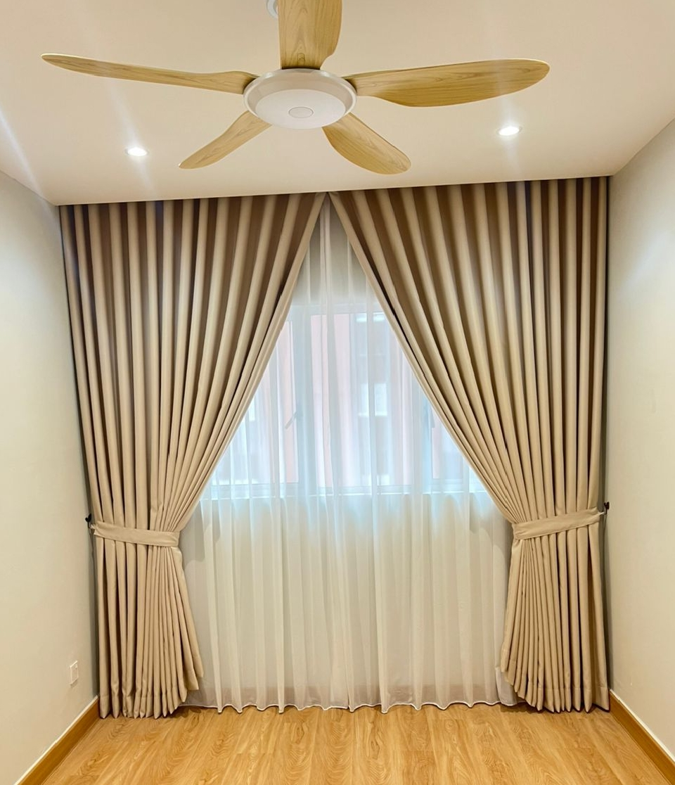
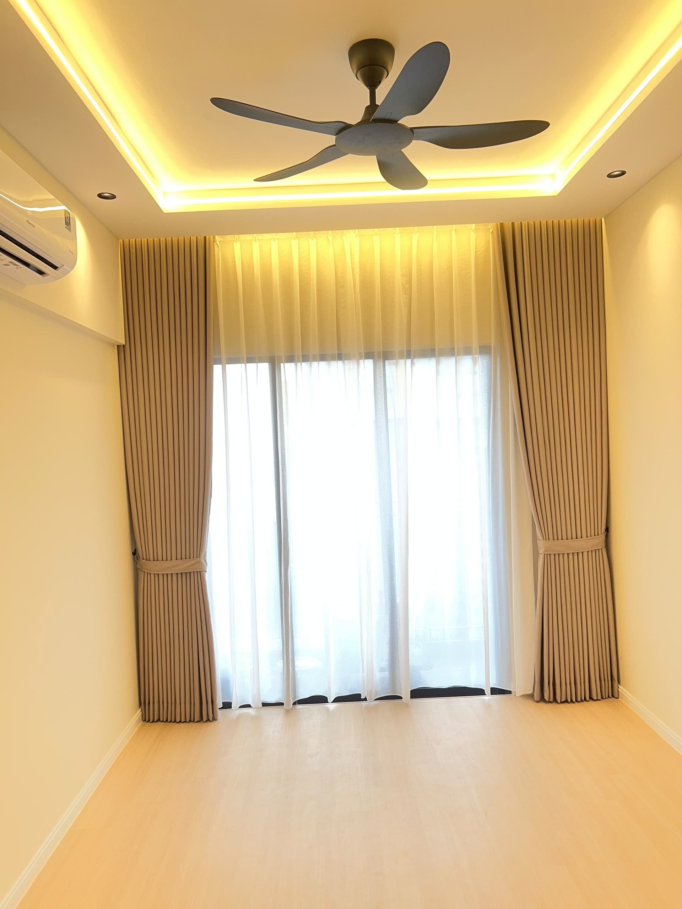
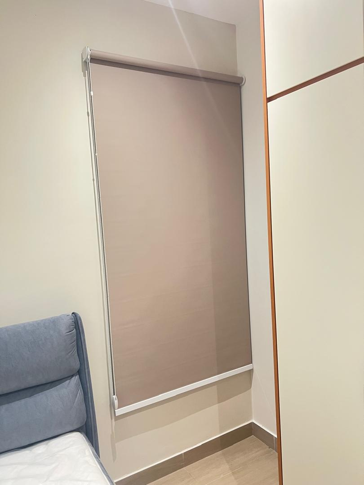
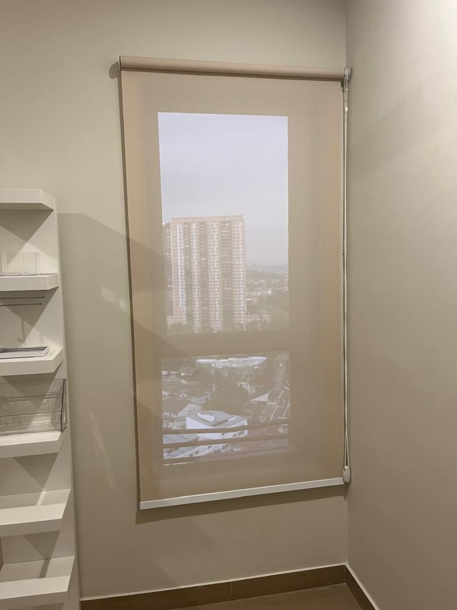
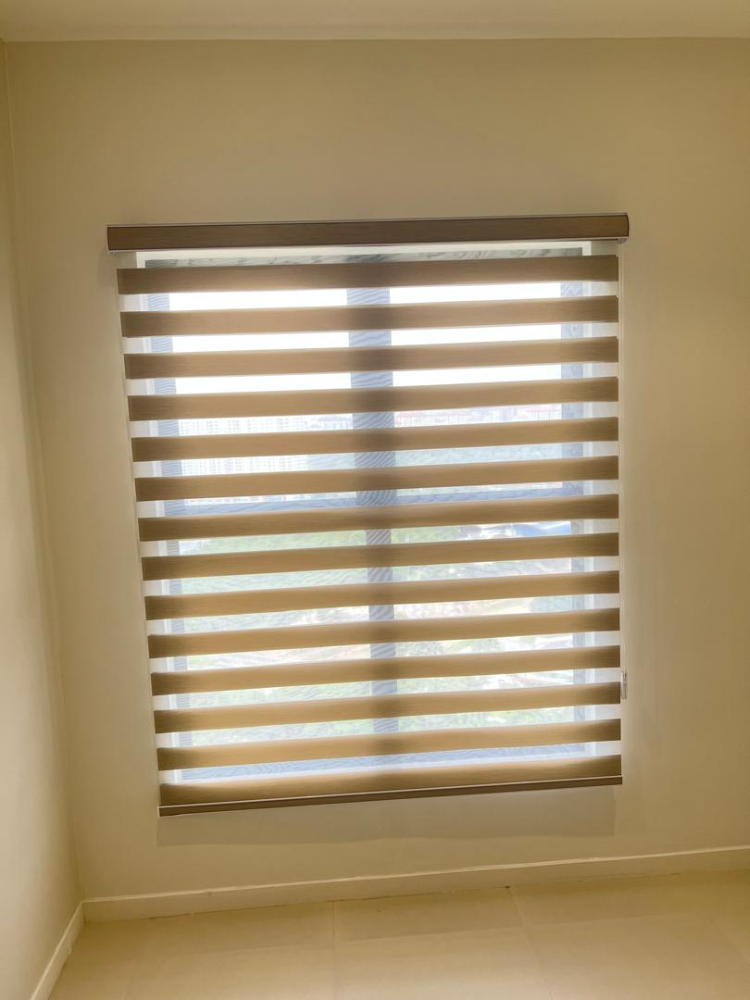
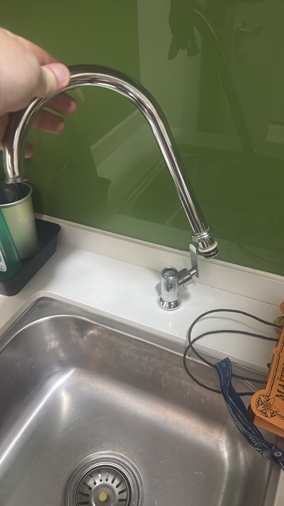

Custom Made Curtains
Made-to-measure curtains planned around your window dimensions, ceiling height and interior style.
Get Quote →Custom-made curtains and blinds, plus practical home maintenance for condos, apartments and landed homes across Klang Valley. Tell us your location and requirements to discuss a quotation.
Made-to-measure window treatments and practical home repair solutions for condos, apartments and landed homes across Klang Valley.
SK Curtain & Home Maintenance Services provides custom-made curtains, blinds and general home maintenance services. For curtains and blinds, we discuss your requirements, arrange measurements where required, and provide a quotation before you confirm.
Options include S-Fold wave curtains, sheer fabrics, blackout curtains, sunscreen roller blinds and zebra blinds. Home maintenance services include general plumbing, electrical installation and repair, waterproofing, TV mounting, mirror hanging and handyman work.
We serve Kuala Lumpur, Petaling Jaya, Cheras, Kajang, Balakong, Seri Kembangan, Puchong, Bukit Jalil, Sunway, Subang Jaya, Ampang, Bangi, Klang and surrounding Klang Valley areas.
Choose a window treatment for privacy, daylight control, comfort and interior style.
Combine a sheer layer with a main curtain layer for a soft, modern look with flexible daylight and privacy. Ask us about fabric options, measurements and installation for your home.
Get Double-Layer S-Fold Quote
Made-to-measure curtains planned around your window dimensions, ceiling height and interior style.
Get Quote →
Modern wave-pleat curtains for living rooms, bedrooms, condos and high-rise homes. Double-layer options are available to discuss.
Get S-Fold Quote →
Blackout fabric options designed to reduce incoming light and improve privacy in bedrooms and living spaces.
Ask for Price →
Help reduce glare and manage daylight while maintaining an outside view during daytime, depending on light conditions.
Ask for Price →
Dual-layer blinds with alternating sheer and opaque bands for adjustable daylight and privacy.
Ask for Price →Curtain track, double-track and blind installation for homes, apartments and condominiums.
Book Installation →Practical repair, installation and maintenance services for move-ins and everyday household jobs.
Need several small jobs completed at home? Send us a list and your location so we can discuss the work and quotation.


Quotation, installation, repair and home maintenance services across selected Klang Valley areas.
Looking for curtain, blind or home maintenance services nearby? Contact us with your location and requirements to check service availability.
One service provider for curtains, blinds, installation and common home maintenance needs.
Simple steps from WhatsApp enquiry to completed service.
Common questions about our curtain, blind and home maintenance services.
We serve Cheras, Kajang, Balakong, Seri Kembangan, Bangi, Kuala Lumpur, Petaling Jaya, Puchong, Bukit Jalil, Sunway, Subang Jaya, Ampang, Klang and nearby Klang Valley areas. Contact us to check your location.
Yes. Ask us about combining a sheer layer with a main curtain layer. We can discuss fabric options, measurements and installation in your quotation.
Yes. Options include S-Fold wave curtains, sheer curtains, blackout curtains, sunscreen roller blinds and zebra blinds.
Services include general plumbing, electrical work, light and ceiling fan fitting, waterproofing, TV wall mounting, mirror hanging and general handyman jobs.
Send your location and requirements through WhatsApp so we can discuss arranging a site visit, measurement or quotation for the service you need.
Message us on WhatsApp with your location, window measurements if available, the curtain or blind style you want, and a photo if possible. We will discuss the quotation with you.
Send your location and requirements on WhatsApp for a quotation or service enquiry.
WhatsApp SK Curtain